⚠️ Este sitio ofrece contenido educativo y de entretenimiento. No garantizamos premios ni estamos afiliados con Roblox Corporation ni Garena.
🎮 Sección Roblox
1. Cómo conseguir Robux gratis (métodos legales)

Los Robux son la moneda premium de Roblox, y aunque normalmente se compran, existen formas legales de obtenerlos gratis:
- Canjea tarjetas regalo de Roblox (a veces se regalan en eventos).
- Participa en sorteos oficiales de creadores o marcas.
- Crea y vende ropa o accesorios en el catálogo (requiere cuenta premium).
- Desarrolla juegos y monetízalos con pases o Gamepasses.
✅ Evita páginas sospechosas o generadores falsos: podrían robar tu cuenta.
2. Juegos más virales de Roblox en 2025

Estos son los juegos más populares y jugados del año:
- Blox Fruits: con miles de jugadores activos, es ideal para fans del anime.
- Pet Simulator X: colecciona y mejora mascotas para volverte millonario.
- Adopt Me!: intercambia mascotas y decora tu hogar.
- Doors: un juego de terror y suspenso que ha explotado en visitas.
🔥 ¡Estos juegos marcan tendencia en TikTok y YouTube!
3. Trucos para subir rápido de nivel en Blox Fruits

Blox Fruits es uno de los juegos más jugados de Roblox. Aquí tienes trucos para subir rápido:
- Enfócate en completar misiones en orden para ganar XP rápidamente.
- Usa frutas con ataques en área para eliminar enemigos más rápido.
- Únete a un servidor privado para farmear sin interrupciones.
⚡ ¡Con dedicación, alcanzarás el nivel máximo en menos tiempo!
4. Cómo conseguir mascotas legendarias en Adopt Me

Adopt Me es famoso por sus mascotas. Aquí tienes algunos consejos para obtener las legendarias:
- Intercambia con otros jugadores que busquen objetos raros.
- Participa en eventos que regalen huevos especiales.
- Compra huevos reales en la guardería y cruza los dedos.
- Cuida tu mascota constantemente para evolucionarla a neón o mega neón.
🐾 ¡La clave es la paciencia y el intercambio inteligente!
5. Cómo avanzar más rápido en Pet Simulator X

Pet Simulator X es perfecto para coleccionistas. Aquí te dejamos algunos tips para avanzar rápidamente:
- Enfócate en mejorar tus mascotas fusionándolas o comprando las de mayor rareza.
- Activa potenciadores como triple coins y super lucky antes de abrir huevos.
- Completa logros diarios para obtener recompensas extras.
- Haz intercambios justos para conseguir mascotas exclusivas.
🐾 ¡El progreso constante te llevará a desbloquear nuevas zonas y mundos secretos!
6. Cómo ganar en Murder Mystery 2

Murder Mystery 2 es un juego de deducción y reflejos. Aquí algunos trucos para ganar:
- Si eres inocente, mantente en movimiento y evita pasillos cerrados.
- Como sheriff, apunta bien y espera a estar seguro antes de disparar.
- Si eres el asesino, elimina en silencio y cambia de ruta para no levantar sospechas.
🔪 ¡El sigilo y la estrategia son claves para la victoria!
7. Estrategias para sobrevivir más rondas en Doors

Doors es un juego de terror muy popular. Estos consejos te ayudarán a sobrevivir más:
- Escucha sonidos de advertencia antes de que aparezca una entidad.
- Usa los casilleros para esconderte solo cuando sea necesario.
- No uses el encendedor todo el tiempo; guárdalo para habitaciones oscuras clave.
- Aprende el patrón de aparición de cada entidad para saber cómo actuar.
🚪 ¡Cada puerta te acerca más al misterio!
8. Cómo ganar más monedas en Brookhaven 🏡RP

Brookhaven es uno de los juegos de roleplay más jugados. Aunque no tiene una moneda oficial, puedes:
- Simular trabajos como policía, médico o conductor de bus.
- Organizar roleos con otros jugadores que te den recompensas simbólicas.
- Usar tu creatividad para crear historias que ganen popularidad en servidores.
🏡 ¡Brookhaven se trata de imaginación y comunidad!
9. Cómo encontrar frutas legendarias en Blox Fruits

Las frutas legendarias son clave para destacar en Blox Fruits. Aquí te explicamos cómo encontrarlas:
- Revisa la tienda de frutas cada 1 hora para ver qué aparece.
- Explora islas en servidores públicos: a veces aparecen aleatoriamente.
- Únete a grupos o comunidades que alerten sobre apariciones.
- Usa el Gamepass de notificación de fruta si tienes Robux disponibles.
🍇 ¡Una buena fruta puede cambiar toda tu estrategia de combate!
11. Cómo obtener objetos gratis en eventos Roblox

Roblox organiza eventos especiales donde puedes conseguir objetos exclusivos gratis:
- Participa en eventos de marcas (Nike, Spotify, Vans, etc.).
- Completa misiones dentro del juego evento.
- Reclama los premios directamente desde tu inventario.
🎁 ¡No olvides activar las notificaciones de eventos en la app de Roblox!
12. Cómo conseguir emotes nuevos y bailes en Roblox

Los emotes te permiten expresarte y bailar en los juegos. Para obtener nuevos:
- Visita la tienda de emotes en el catálogo.
- Busca emotes gratis y agrégalos a tu avatar.
- Activa el menú de emotes con la tecla "/" dentro de los juegos compatibles.
💃 ¡Explora los más populares y úsalos en tus juegos favoritos!
13. Cómo usar códigos promocionales de Roblox

Los códigos promocionales te permiten obtener objetos gratis para tu avatar. Para canjearlos:
- Visita roblox.com/promocodes
- Ingresa el código válido y haz clic en "Canjear".
- Los objetos aparecerán en tu inventario si el código aún está activo.
🎟️ Algunos códigos son por tiempo limitado, ¡aprovecha rápido!
14. Mejores juegos de rol (roleplay) en Roblox 2025

¿Te encanta actuar como en la vida real? Estos juegos de roleplay son los más populares en 2025:
- Brookhaven 🏡RP: Crea tu propia historia en una ciudad abierta.
- Livetopia: Simula trabajos, vive en casas lujosas y más.
- Club Roblox: Forma una familia, decora tu casa y adopta mascotas.
🎭 ¡Ideal para jugar con amigos y crear historias!
15. Cómo canjear tarjetas regalo de Roblox

Las tarjetas regalo de Roblox son una excelente forma de obtener Robux o membresías:
- Compra tarjetas físicas en tiendas o digitales en línea.
- Ve a roblox.com/redeem.
- Ingresa el código de tu tarjeta y obtén Robux o suscripciones.
🎉 ¡Perfecto para regalos o premiar tu progreso!
🔥 Sección Free Fire
16. Mejores armas para clasificatoria en Free Fire (2025)
Si quieres subir de rango más rápido en Free Fire, necesitas elegir las armas correctas.
- MP40: velocidad de disparo brutal en combate cercano.
- M1887: escopeta letal en enfrentamientos cara a cara.
- AK: gran daño a media distancia con buena puntería.
- AWM: ideal para francotiradores expertos.
🔥 ¡El arma correcta puede marcar la diferencia entre el top 10 y la victoria!
17. Trucos para hacer headshots más fáciles en Free Fire
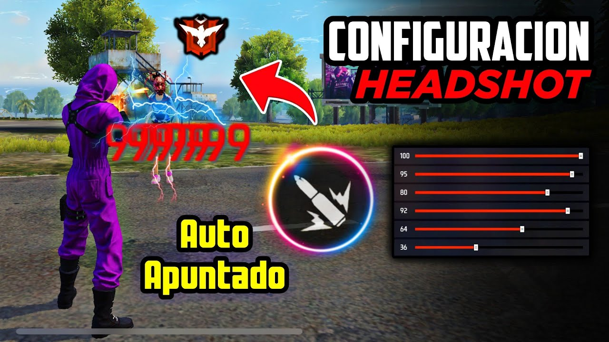
Los headshots son clave para eliminar enemigos con rapidez.
- Apunta ligeramente por encima del pecho y desliza hacia arriba.
- Usa armas precisas como la M14 o la Scar.
- Ajusta tu sensibilidad para controlar mejor el movimiento.
🔥 ¡Con práctica, lograrás headshots automáticos!
18. Cómo conseguir diamantes gratis de forma legal
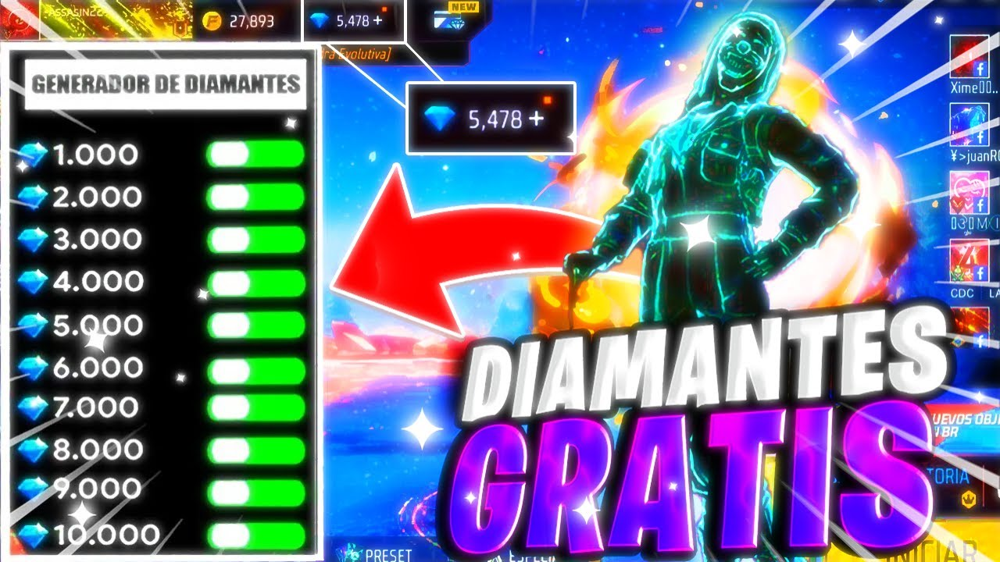
Los diamantes te permiten comprar personajes, skins y más.
- Participa en eventos oficiales dentro del juego.
- Usa Google Opinion Rewards para ganar saldo.
- Sigue influencers que hacen sorteos confiables.
🔥 ¡Con paciencia puedes obtener muchos diamantes sin gastar!
19. Configuración de sensibilidad perfecta para headshots
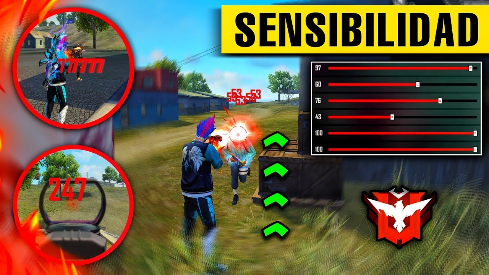
Una buena sensibilidad te da ventaja en todos los combates.
- General: 95-100
- Mira de punto rojo: 90
- Mira 2x: 85
- Mira 4x: 80
- AWM: 50
🔥 ¡Una sensibilidad equilibrada mejora tus reflejos!
20. Personajes más fuertes del meta 2025 en Free Fire
Estos personajes dominan las clasificatorias por sus habilidades:
- Homer: ciega enemigos y ralentiza.
- Tatsuya: velocidad brutal en combates cortos.
- Xayne: más daño con vida extra en intercambios directos.
- CR7: defensa estratégica con su escudo activo.
🔥 ¡Escoge bien y domina cada partida!
21. Mejores combinaciones de habilidades (habilidades activas + pasivas)
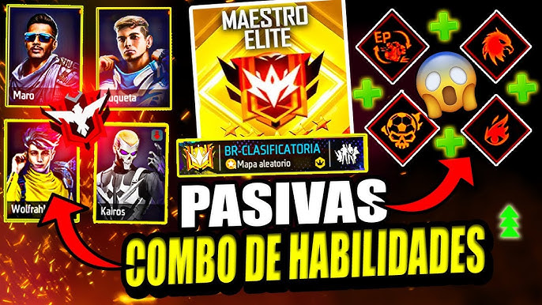
Estas combinaciones te darán ventaja en cualquier partida:
- CR7 + Jota + Hayato + Kelly.
- Tatsuya + Dasha + Moco + Maxim.
- Wukong + Laura + Rafael + Leon.
🔥 ¡Un combo bien pensado es letal!
22. Guía para dominar el mapa Bermuda
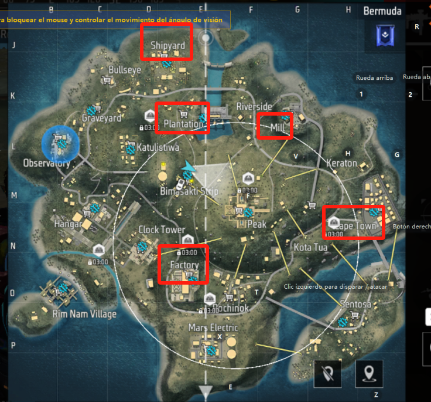
Bermuda es el mapa clásico de Free Fire. Conócelo a fondo:
- Pochinok: excelente para loot rápido.
- Clock Tower: ideal para PVP intensos.
- Observatorio: zona segura para posicionamiento.
- Mill: para quienes buscan loot sin muchos rivales.
🔥 ¡Conoce el terreno y gana ventaja estratégica!
23. Cómo jugar en dúo como un pro
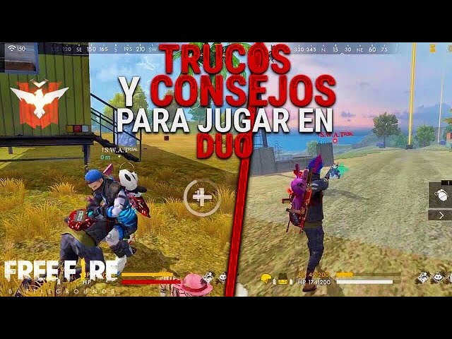
La comunicación es clave en el modo dúo:
- Usa ping y voz para avisar enemigos o botines.
- No te separes demasiado de tu compañero.
- Cúbrelo mientras revive o cura.
🔥 ¡El trabajo en equipo asegura más Booyahs!
24. Top 5 mascotas y sus habilidades útiles
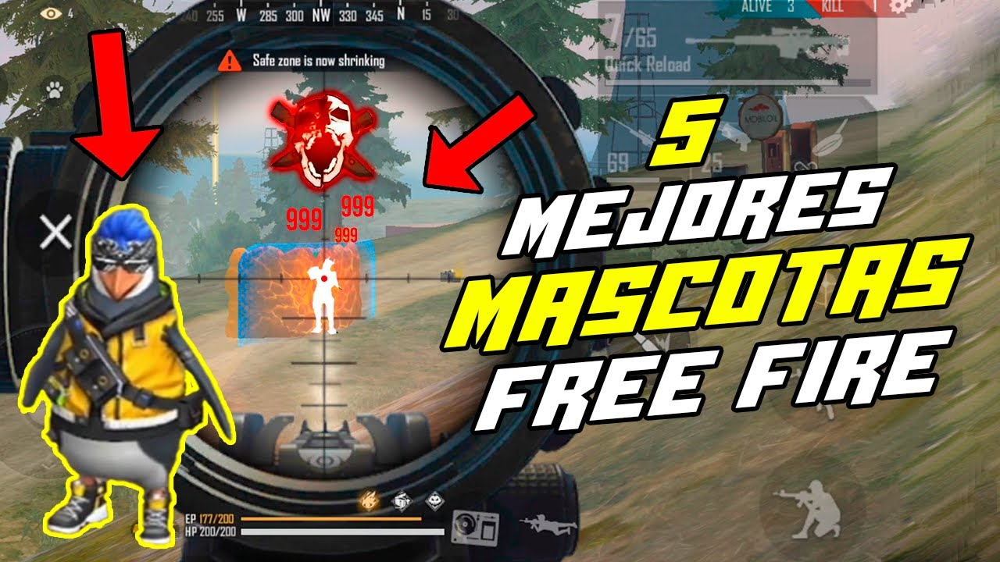
Las mascotas dan ventaja extra si eliges bien:
- Falco: caída más rápida.
- Detective Panda: cura con cada baja.
- Ottero: doble recuperación al usar botiquín.
- Rockie: reduce enfriamiento de habilidad activa.
- Beaston: mayor alcance con granadas.
🔥 ¡Elige la mascota ideal para tu estilo!
25. Trucos para sobrevivir en el último círculo

En los momentos finales, cada segundo cuenta:
- Lleva siempre paredes gloo.
- Ten botiquines y hongos activados.
- Juega con la zona: espera que otros peleen primero.
🔥 ¡Quedar en el top 3 ya no será suerte!
26. Cómo usar correctamente el personaje CR7 (Chrono)
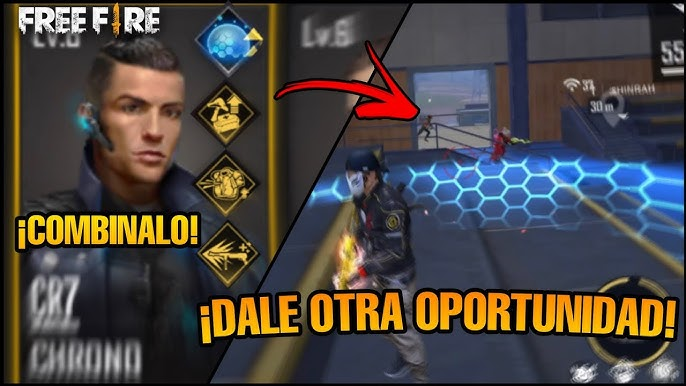
CR7 es uno de los personajes más usados por su escudo:
- Úsalo para revivir aliados en zona abierta.
- Actívalo justo antes de recibir daño fuerte.
- Combínalo con velocidad o curación para huir o contraatacar.
🔥 ¡El tiempo del escudo es oro en clasificatoria!
27. Consejos para subir a Heroico más rápido

Llegar a Heroico requiere constancia y estrategia:
- Evita enfrentamientos innecesarios.
- Sobrevive al menos al top 10 para sumar puntos.
- Juega en escuadra con amigos coordinados.
🔥 ¡Heroico es tuyo si juegas con cabeza fría!
28. Cómo configurar el HUD personalizado
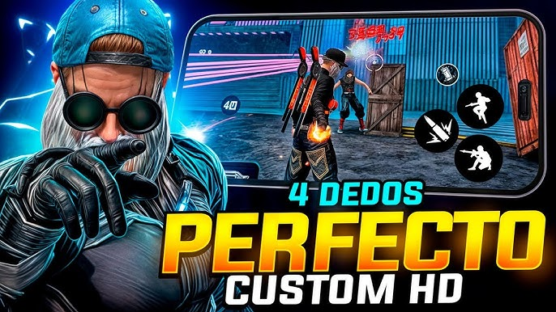
El HUD afecta tu velocidad de reacción y control:
- Coloca el botón de disparo donde te sea más cómodo.
- Usa tres dedos o más para mayor ventaja.
- Configura el botón de pared gloo para rápido acceso.
🔥 ¡Un buen HUD te hace más rápido en combate!
29. Mejores skins de armas con atributos
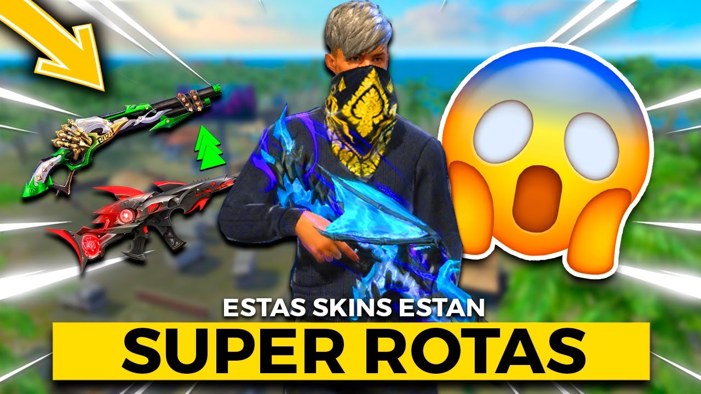
Algunas skins dan estadísticas extra muy útiles:
- Scar Megalodon: daño y velocidad.
- MP40 Predadora Letal: cadencia y precisión.
- AK Dragón Flama Azul: gran alcance y daño.
🔥 ¡No solo se ven bien, también mejoran tu jugabilidad!
30. Retos virales de Free Fire en TikTok (2025)
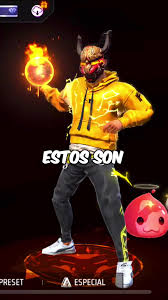
Estos desafíos están de moda entre creadores:
- Ganar una partida sin usar botiquines.
- Solo usar armas de corto alcance.
- Jugar con sensibilidad al 100% en todo.
🔥 ¡Diviértete y gana seguidores al mismo tiempo!